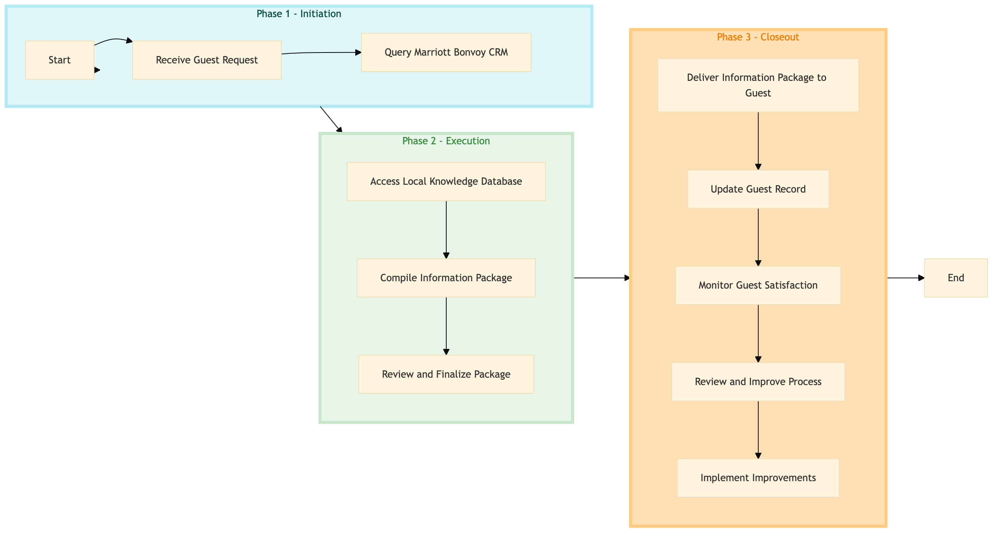

| Role | Steps |
|---|---|
| Front Desk Agent | 1.1 1.2 3.1 3.2 |
| Concierge | 2.1 2.2 2.3 3.3 |
| Executive Housekeeper | 3.2 |
| Revenue Manager | 3.4 3.5 |
| Step | Name | Role | System | Input | Output | KPI | Dec? | Exc? | Pain Point / Risk |
|---|---|---|---|---|---|---|---|---|---|
| 1.1 | Receive Guest Request | Front Desk Agent | Oracle OPERA Cloud | Guest request for information | Acknowledgment of request | Less than 2 minutes | N | Y | Handling unexpected requests or language barriers |
| 1.2 | Query Marriott Bonvoy CRM | Front Desk Agent | Marriott Bonvoy CRM | Guest profile and request details | Guest history and preferences | Less than 1 minute | N | Y | Data accuracy and completeness in the CRM |
| 2.1 | Access Local Knowledge Database | Concierge | Knowcross HotSOS | Guest request details | Local information and recommendations | Less than 3 minutes | N | Y | Database connectivity issues |
| 2.2 | Compile Information Package | Concierge | Oracle OPERA Cloud | Local information and guest preferences | Customized information package | Less than 5 minutes | N | Y | Time-consuming manual compilation |
| 2.3 | Review and Finalize Package | Executive Housekeeper | Oracle OPERA Cloud | Customized information package | Finalized information package | Less than 2 minutes | N | Y | Ensuring accuracy and relevance |
| 3.1 | Deliver Information Package to Guest | Front Desk Agent | Oracle OPERA Cloud | Finalized information package | Guest receives information | Less than 2 minutes | N | Y | Physical delivery issues |
| 3.2 | Update Guest Record | Front Desk Agent | Oracle OPERA Cloud | Guest feedback and interaction details | Updated guest record | Less than 1 minute | N | Y | Data entry errors |
| 3.3 | Monitor Guest Satisfaction | Concierge | Oracle OPERA Cloud | Guest feedback and interaction details | Satisfaction report | Less than 10 minutes | N | Y | Collecting accurate feedback |
| 3.4 | Review and Improve Process | Revenue Manager | Oracle OPERA Cloud | Satisfaction report and process data | Process improvement plan | Less than 1 hour | Y | N | Balancing operational efficiency with guest satisfaction |
| 3.5 | Implement Improvements | Revenue Manager | Oracle OPERA Cloud | Process improvement plan | Updated process documentation | Less than 1 day | N | Y | Resistance to change |
This process involves gathering and providing guest information and local knowledge at a Marriott full-service hotel. It ensures that guests receive accurate and timely information to enhance their stay.